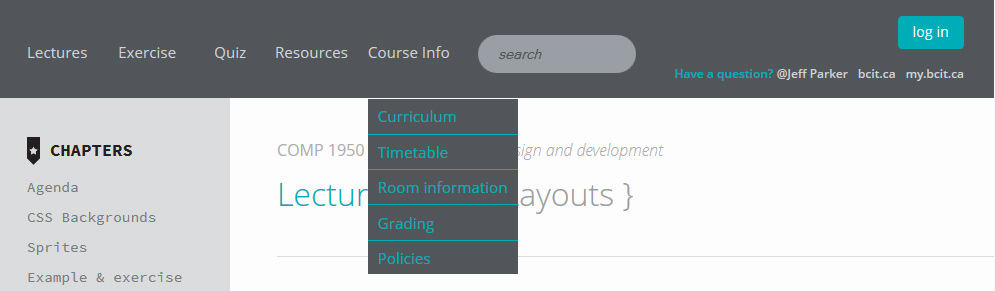
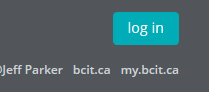
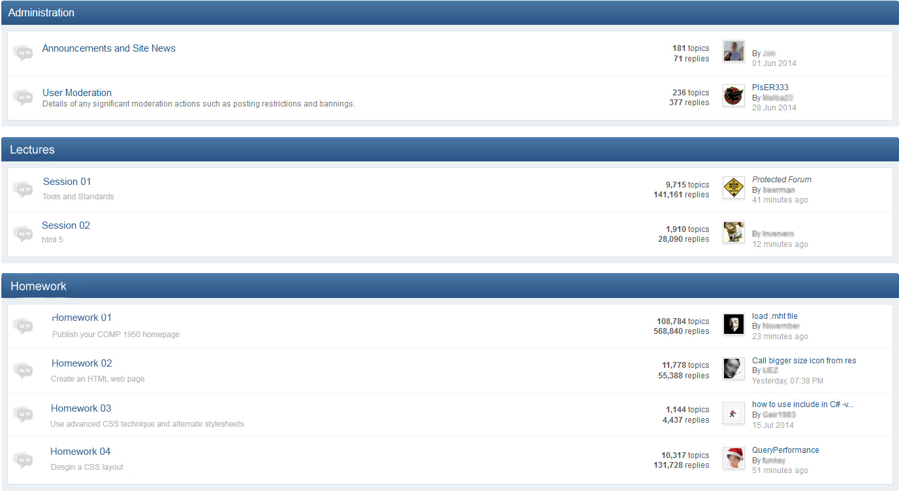
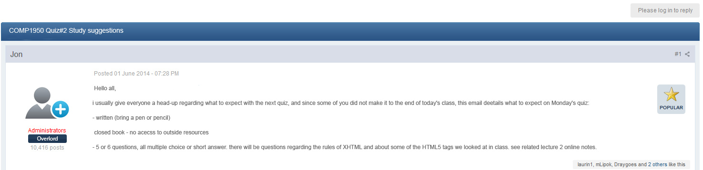
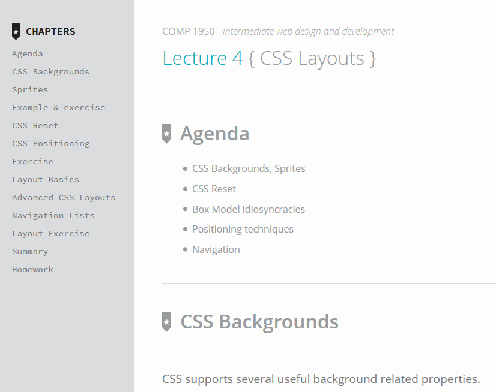
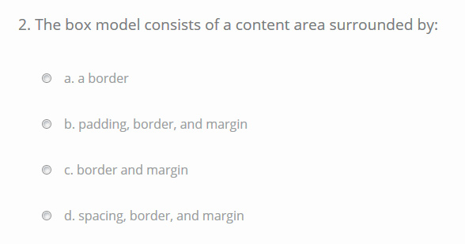
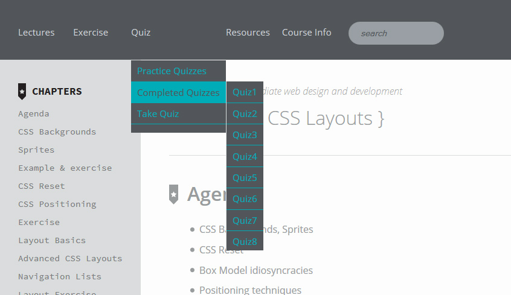

Welcome to Our Website!
Our proposed redesign of the COMP1950 website will be the best that the students of BCIT have ever seen. BCIT prides itself for offering the best quality education to help students enter the workforce. The new design will use the latest web technologies such as HTML 5.0 and CSS3 to bring state of the art tools for learning and making education fun and exciting, helping students entering the workforce to be the best educated.
The website has one purpose in mind and that it is to bring the information to the students as quick as possible. If offers a clean look preventing information overload on students who need to absorb as much information in as little as 10 weeks. It will offer an effective navigation that will alllow students to retrieve any information in as little as 2 steps. Using CSS3 to add rounded corner buttons, enhanced color affects using RBA colors and transitions, the new redesign offers visually appealing style, enticing the students to learn the material and make learning fun. There are 5 main sections: lecture notes, exercises, quizzes, resources, and course info. To help students focus on the task at hand, dynamic menu items allows for homework or quizzes to disabled until the teacher have covered the material in class. (note: need administrator login to administrator this)
Sample new features... Each lecture is bookmarked by heading/topic allowing for quick access to sub-topics within a lecture. Gone are the handouts of quizes and exams on paper. The website will allow students to take exams online and get feedback immediately.
Using HTML 5 improves symantacs and allows for search engine optimization, allowing for content to be searched more quickly and accurately. New form inputs types means entered data can be validated more quickly before the form is even submitted. Datalists offers hints to users to speed up data entry. One of the greatest new enhancements offered by HTML 5 is the ability to specify pages to be cached. Since lectures notes rarely change after they have been released, student still have access to the notes to read should they be disconnected to the internet connection.
The internal structure is highly flexible which will allow for upgrade to new technologies as time progresses. It also meets the future needs of the classroom. One day lectures could recorded in video or audio could be uploaded and played without downloading additional plugins.
New Feature Highlights
Enhanced Navigation
New Menu
New menu with drop downlist
Log in
Allows for students to log in and prevent unauthorized access to the material. Also students can take quizzes, see past quiz results, post message to the message board.
Search bar
Search bar allows searching lecture for keywords, greatly speeding up retrieval of lecture notes while doing assignments and studying for exams.
News & Message Board
Using CMS, the teacher can broadcast to students on news such as details of quizzes and clarifications on homework assignments. Now all the COMP1950 related news can be found in one location. A Message board can be provided for students to collaborate on challenging homework assignment topics or discuss what they recently learned.  
Lectures
The lecture notes now appear with an outline which are hyperlinked to the lecture content which allows for easy navigation to lecture content. The outline provides a great summary of the lecture and is a useful study aid in itself. As before, the students can download homework.
The lecture page will also allow teachers to interact with students by providing online surveys in which the students could participate. The online survey would use HTML5 canvas to draw the charts and help the teacher survey which material requires more emphasis.
Lectures will have an interactive component
Interactive Poll Results:
Just by even submitting a poll question, students can receive participation marks.
Exercises
The exercises downloads have been moved from the lecture page and to the new Exercise page where the exercise solutions will be also posted. Having all of the exercises on one page will help speed review of material for exams and also for doing homework assignments. The system could be upgraded to upload exercises if need be.
Quiz
The quiz section allows students to take practice quizzes, review previous quizzes that have been submitted, or take a current quiz administered by the teacher during class. The practice quizzes are quizzes that the teacher provides students that will be similiar in style to the actual quizzes and exams. The completed quizzes are quizzes that the students have taken in the past which displays their scores and allows for them to review the material before the exams.  For the above sections, the complete list of quizzes will be displayed but only quizzes that have been administered by the teacher will be enabled. Quizzes are multiple choice. Once submitted, students will be able to find out their score right away. The quiz will then appear enabled in the Completed Quiz list section. The quiz will have a countdown timer to aid students.
We need to mentioned where we used jQuery or CSS and why.List Features planned to implement but could not complete
Of the following features listed above, the following have yet to be implemented:- login
- search lecture content
- Class news
- coloaboration message board
- quiz page